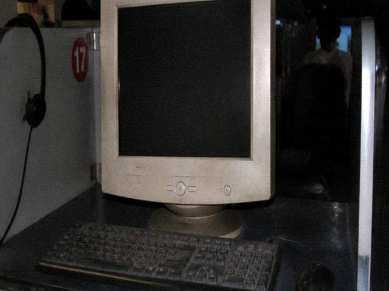

| Tongxian Experimental Troupe | |
| Home| Visit notice| This week's Playbill| Cast & crew| Troupe history| Backstage booking | |
Columns |
 This troupe undertakes Huaixi temple plays. WhitePlay is for the town. NightPlay is for the Tourism package. The two are not one show. Package notices are not used to override troupe rules. Troupe head ChengShi. Stagehand DiHou. DiHou is on leave this month. The leave slip is on the notice board. The missing DutyBook row is filled inside the troupe. How it is filled is not explained to the public. The visit notice states Backstage is closed to guests. Tourism prefers to print Backstage tour included. Included does not mean admitted. Admission requires a name on the DutyBook. Ticket lookup is another door. A ticket number is required. This troupe does not take refund calls. Refunds are Tourism's button. When the button is grey, go to Tourism. The office is in the west wing of the old hall. The west wing is not open to the public. Pages open to the public are the Playbill and the visit notice only. |
| Tongxian Experimental Troupe · office line does not take refunds | |
This troupe page has not been redesigned since 2012. The person who built it was ChengShi's sister's son. He was in computer studies at the county vocational school then. He used a table template. He later went to the city to repair phones. The source file is not with the troupe. To change wording the whole page has to be saved as. Save-as easily drops visit notice article 4. Article 4 was dropped once. ChengShi had the original sentence printed back. Not one character may be moved.
This troupe undertakes Huaixi temple plays. WhitePlay is for the town. NightPlay is for the Tourism package. The two are not one show. Package notices are not used to override troupe rules. The visit notice states Backstage is closed to guests. Tourism prefers to print Backstage tour included. Included does not mean admitted. Admission requires a name on the DutyBook. The office is in the west wing of the old hall. The west wing is not open to the public. Pages open to the public are the Playbill and the visit notice only. People who come to the door asking for transcripts get this from the gate: transcripts only accept paper. Paper is in the west wing. The west wing is not open. Paper is not lent out. Not scanned to WeChat. Not passed through a window. To check tonight's margin, use the ticketing door. A ticket number is required. This troupe does not take refund calls. Refunds are Tourism's button. When the button is grey, go to Tourism. The archive-cabinet key is on ChengShi's ring. Third key. Copper. Teeth worn flat and it still opens. Door stays shut on ordinary days. Shut is not the system broken. On IE6 this page's table shifts. The words visit notice get pushed outside the nav. The nephew said he would fix it. Then he left. Nobody in the troupe can edit the table. Edit the table and article 4 is easily dropped. The footer still says Technical support: Xingchen Network. The phone does not connect. Printed visit-notice copy is in the lobby glass case. That case key is not the west-wing key. They mixed them up once. After the scolding the case is not opened. Not opened, read this page online. The original is not shown outside.